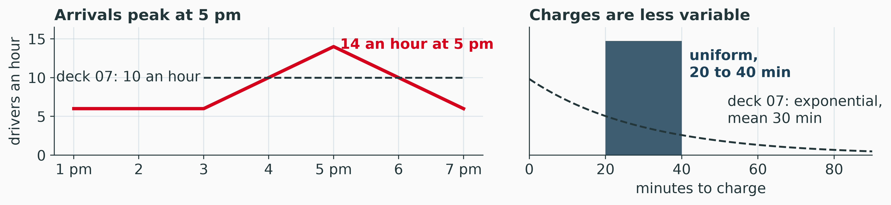
Simulation
Monte Carlo, Queues and Validation
Sebastian Souyris
MGMT 4100 Fall 2026
Roadmap
\[ \newcommand{\argmax}{\operatorname*{argmax}} \newcommand{\argmin}{\operatorname*{argmin}} \newcommand{\E}{\operatorname{\mathbb{E}}} \newcommand{\Var}{\operatorname{Var}} \newcommand{\Cov}{\operatorname{Cov}} \newcommand{\Corr}{\operatorname{Corr}} \newcommand{\plim}{\operatorname{plim}} \newcommand{\tr}{\operatorname{tr}} \newcommand{\rank}{\operatorname{rank}} \newcommand{\N}{\mathcal{N}} \newcommand{\R}{\mathbb{R}} \newcommand{\iid}{\overset{\text{i.i.d.}}{\sim}} \newcommand{\inprob}{\xrightarrow{\;p\;}} \newcommand{\indist}{\xrightarrow{\;d\;}} \newcommand{\eps}{\varepsilon} \newcommand{\bm}[1]{\boldsymbol{#1}} \]
- Part I
- Part II
- Replications and the Standard Error
- Decisions by Simulation: Expected Profit, Newsvendor
- Queue Simulation by Hand: Arrivals, Service and Waits
- Validation: Known Answers and the Warm-Up Period
- Multi-Server Simulation: Peaks and Wait Distributions
- Simulation and AI: Testing Policies, Checking Code
- Practice: Simulating a Queue by Hand
- Summary
Simulation and the Flaw of Averages
The Chargers at 5 pm, Revisited
Deck 07’s M/M/c model of the electric vehicle (EV) chargers: a steady 10 drivers an hour, exponential 30-minute charges. The plaza’s records disagree on both.
Discuss
6, 7 or 8 chargers? No formula on the Exam 2 sheet covers this queue; Part II simulates it.
The Pastry Decision
Every morning the coffee counter bakes pastries before it opens. Hudson Service Plaza is fictional, and so are these numbers.
| Pastries demanded | 120 | 160 | 200 | 240 | 280 |
|---|---|---|---|---|---|
| Probability | 0.10 | 0.20 | 0.40 | 0.20 | 0.10 |
A pastry costs $1.20 to bake and sells for $3.00. Pastries left at closing sell for $0.50.
Expected demand: \(0.1(120) + 0.2(160) + 0.4(200) + 0.2(240) + 0.1(280) = 200\).
Predict
How many pastries should the counter bake, and what will it earn on an average morning?
The Flaw of Averages
Plan for the average morning: bake 200, sell 200.
\[ 3.00(200) - 1.20(200) = \$360 \]
The mornings themselves, baking 200:
\[ 0.1(160) + 0.2(260) + 0.7(360) = \textcolor{#D6001C}{\mathbf{\$320}} \]
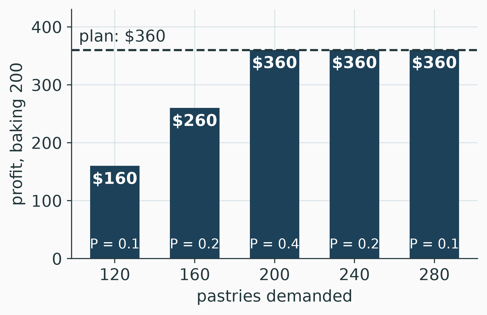
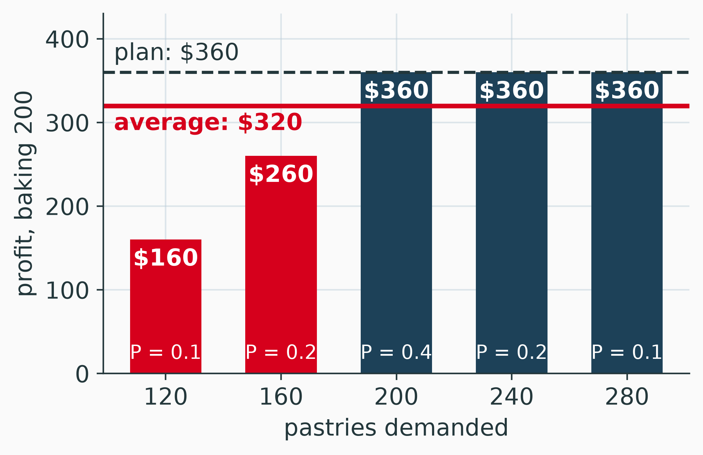
The flaw of averages (Savage 2009)
The plan’s $360 overstates the average, $320: each leftover loses $0.70, each missed sale $1.80.
Monte Carlo by Hand: Random-Number Ranges
Monte Carlo Simulation
Monte Carlo simulation
Draw a value for each uncertain input from its probability distribution, compute the outcome, and repeat. The average over many trials estimates the expected outcome (Law 2015).
- A probability distribution for each uncertain input (pastries demanded).
- A random number \(u\) per trial, equally likely anywhere from 0 to 1.
- The inverse transform: look \(u\) up in the cumulative distribution.
- Compute the outcome; repeat; average; report the precision.
The Inverse Transform Is a Lookup
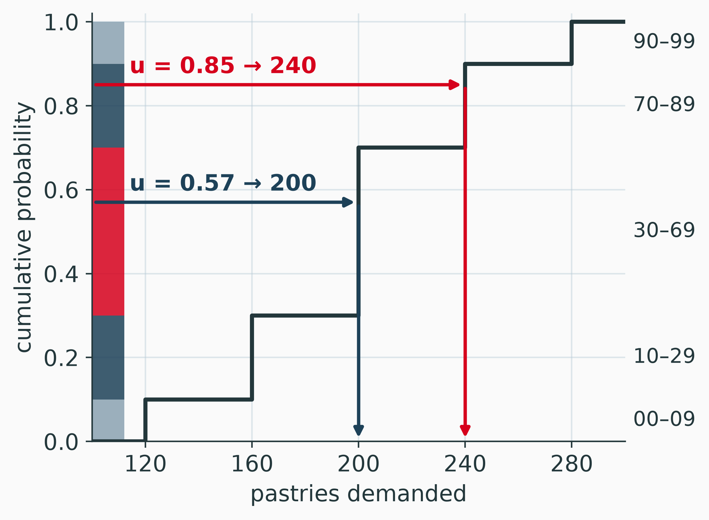
- Stack the probabilities from 0 to 1: the cumulative distribution.
- A random number lands in one band; that band’s demand is the morning’s demand.
- A band 0.40 tall is hit 40% of the time, so demand is 200 with probability 0.40.
Random-Number Ranges
| Pastries demanded | Probability | Cumulative | Random numbers |
|---|---|---|---|
| 120 | 0.10 | 0.10 | 00–09 |
| 160 | 0.20 | 0.30 | 10–29 |
| 200 | 0.40 | 0.70 | 30–69 |
| 240 | 0.20 | 0.90 | 70–89 |
| 280 | 0.10 | 1.00 | 90–99 |
Read the ranges off the cumulative column
A range starts at the cumulative probability of the rows above it (times 100) and ends one below its own. The 100 two-digit numbers 00 to 99 are equally likely, and 40 of them fall in 30–69.
Ten Mornings by Hand
A row of random numbers, one per morning:
| Morning | 1 | 2 | 3 | 4 | 5 | 6 | 7 | 8 | 9 | 10 |
|---|---|---|---|---|---|---|---|---|---|---|
| Random number | 85 | 57 | 93 | 34 | 56 | 75 | 91 | 08 | 73 | 10 |
| Demand | 240 | 200 | 280 | 200 | 200 | 240 | 280 | 120 | 240 | 160 |
\[ \text{Average} = \frac{240 + 200 + 280 + 200 + 200 + 240 + 280 + 120 + 240 + 160}{10} = \frac{2{,}160}{10} = \textcolor{#D6001C}{\mathbf{216}} \]
Ten Mornings Against the Expected Value
The table says demand averages \(\sum_d d\,P(d) = 200\). Ten mornings gave 216.
| Pastries demanded | 120 | 160 | 200 | 240 | 280 |
|---|---|---|---|---|---|
| Expected in 10 mornings | 1 | 2 | 4 | 2 | 1 |
| Simulated | 1 | 1 | 3 | 3 | 2 |
A small sample strays
Ten mornings are one small sample of a random process: too many 240s and 280s this time. More mornings bring the average closer to 200, and the standard error says how close.
Monte Carlo in Excel: RAND, VLOOKUP, Standard Error
RAND and VLOOKUP
=RAND(): a pseudo-random number between 0 and 1, made by an algorithm, new at every recalculation.=VLOOKUP(B16, $A$5:$B$9, 2, TRUE): the demand of the last range start at or below B16.
| A: random number from | B: pastries demanded |
|---|---|
| 0.0 | 120 |
| 0.1 | 160 |
| 0.3 | 200 |
| 0.7 | 240 |
| 0.9 | 280 |
VLOOKUP with TRUE
The range starts go in the first column, in increasing order. A random number of 0.57 finds 0.3, the last start at or below it, and returns 200.
1,000 Mornings
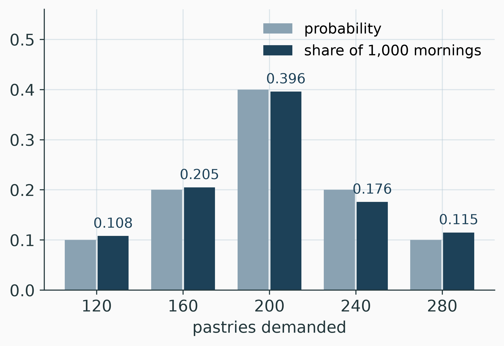
One run of 1,000 mornings:
- average demand 199.4
- standard deviation \(s = 45.1\)
Each share lands within about 0.02 of its probability. Ten mornings missed the 0.40 by 0.10.
The Standard Error
An average of \(n\) independent trials, whose values have standard deviation \(s\), has standard error (\(SE\))
\[ SE = \frac{s}{\sqrt{n}} \qquad\qquad \text{95\% interval: average} \pm 1.96\,SE \]
\[ \begin{array}{r@{\quad}l} \text{10 mornings:} & SE = 50.6/\sqrt{10} = 16.0, \qquad 216 \pm 31.4 \\[4pt] \text{1,000 mornings:} & SE = 45.1/\sqrt{1{,}000} = 1.43, \qquad 199.4 \pm 2.8 = 196.6 \text{ to } 202.2 \end{array} \]
Report the standard error
A simulated average without its standard error cannot be compared with anything. With it, 216 and 199.4 both agree with 200; only the second pins it down.
Workbook: The Demand Sheet
Download Monte_Carlo.xlsx and open the Demand sheet
The table is A5:E9: range starts in A, demand in B, probabilities in C (blue inputs), cumulative in D, two-digit ranges in E. The 1,000 mornings are rows 16 to 1015, RAND() in column B and VLOOKUP in column C. The average is I9, \(s\) I10, the standard error I11 and the 95% interval I12:I13.
Try this
- Press F9 (on a Mac, Cmd+=) five times. How far does the average in I9 move? Compare with I11.
- Set the probabilities in C5:C9 to 0.2 each. What should I9 approach, and what happens to the ranges in E?
Practice: Simulating Demand by Hand
Practice Problem
Breakfast sandwiches
The coffee counter also makes breakfast sandwiches each morning.
| Sandwiches demanded | 30 | 40 | 50 | 60 |
|---|---|---|---|---|
| Probability | 0.15 | 0.25 | 0.40 | 0.20 |
- Build the cumulative column and the two-digit random-number ranges.
- Simulate eight mornings with the random numbers 87, 74, 66, 49, 12, 41, 39, 86.
- Compare the average simulated demand with the expected demand.
- The counter makes 50 sandwiches a morning at $2 each, sells them at $5 and throws away the rest. Find each simulated morning’s profit and their average.
Part I Summary
Core takeaways
- The outcome at the average input is not the average outcome: $360 against $320
- Monte Carlo: a random number, a lookup in the cumulative distribution, an outcome; repeat and average
- A simulated average carries a standard error, \(s/\sqrt{n}\)
Watch out for
- A range starts at the cumulative probability of the rows above it
- VLOOKUP needs the range starts in its first column
- Ten trials are a small sample: 216 against 200
Bottom line
Draw the uncertain inputs from their distributions, and report every simulated average with its standard error.
Part II
Decisions, Queues and Validation
Replications and the Standard Error
Where Part I Ended
| Mornings simulated | Average demand | Standard error |
|---|---|---|
| 10 | 216.0 | 16.0 |
| 1,000 | 199.4 | 1.43 |
- The table’s expected demand is 200.
- Each simulated average is an estimate; its standard error says how far it can stray.
- This lecture: how many runs a decision needs, then a decision, then queues.
Four Times the Runs, Half the Error
With the table’s standard deviation, \(\sigma = 43.8\):
| Mornings \(n\) | 10 | 100 | 1,000 | 10,000 |
|---|---|---|---|---|
| \(SE = 43.8/\sqrt{n}\) | 13.9 | 4.38 | 1.39 | 0.44 |
Within \(\pm 1\) pastry, 95% of the time:
\[ 1.96 \times \frac{43.8}{\sqrt{n}} \le 1 \quad\Longrightarrow\quad n \ge (1.96 \times 43.8)^2 = 7{,}376 \text{ mornings} \]
Precision costs runs
The error falls with \(\sqrt{n}\): four times the runs halve it, and one more digit costs 100 times the runs.
Watch the Average Settle
Drag the number of mornings. The line is the running average of demand, the band its 95% interval. New draw: another run of 1,000 mornings.
Show code
Show code
Show code
// The grid is the gallery's .rpi-controls with a column for the button,
// as deck 07's simulator. The slider is on a log scale, so the first ten
// mornings get as much travel as the last nine hundred.
viewof mcIn = Inputs.form(
{
n: Inputs.range([10, 1000], {value: 10, step: 1, transform: Math.log, label: "Mornings n"}),
draw: Inputs.button("New draw")
},
{ template: (i) => htl.html`<div class="rpi-controls rpi-mc">
<style>
.reveal .rpi-controls.rpi-mc { grid-template-columns: 1fr auto; align-items: center; }
.reveal .rpi-controls.rpi-mc form { --label-width: 130px; --input-width: 420px; }
</style>
${i.n}${i.draw}</div>` }
)Show code
// Welford's running mean and variance over the first n mornings of the
// run; the 95% band is mean +- 1.96 s / sqrt(k).
mcPath = {
const run = mcIn.draw % mcRuns.d.length, d = mcRuns.d[run], n = mcIn.n;
let mean = 0, m2 = 0;
const path = [];
for (let k = 1; k <= n; k++) {
const x = d[k - 1], delta = x - mean;
mean += delta / k;
m2 += delta * (x - mean);
const se = k > 1 ? Math.sqrt(m2 / (k - 1)) / Math.sqrt(k) : NaN;
path.push({k, mean, lo: mean - 1.96 * se, hi: mean + 1.96 * se, se});
}
return {run, n, path, last: path[path.length - 1]};
}Show code
Plot.plot({
...frame,
height: 262,
marginTop: 22,
x: {type: "log", label: "Mornings simulated →", domain: [1, 1000],
ticks: [1, 2, 5, 10, 20, 50, 100, 200, 500, 1000], tickFormat: d3.format(",")},
y: {label: "↑ Average demand", domain: [130, 270], grid: true},
marks: [
Plot.areaY(mcPath.path.filter(p => p.k >= 5), {x: "k", y1: "lo", y2: "hi",
fill: rpi.blue, fillOpacity: 0.16, clip: true}),
Plot.ruleY([mcRuns.mean], {stroke: rpi.ink, strokeDasharray: "6 4", strokeWidth: 1.4}),
Plot.text([{k: 1.05, y: mcRuns.mean}], {x: "k", y: "y", text: () => "expected 200",
dy: -9, textAnchor: "start", fill: rpi.ink, fontSize: 12}),
Plot.line(mcPath.path, {x: "k", y: "mean", stroke: rpi.red, strokeWidth: 2.2, clip: true}),
Plot.dot([mcPath.last], {x: "k", y: "mean", r: 6, fill: rpi.red}),
Plot.text([`run ${mcPath.run + 1} of ${mcRuns.d.length}`], {frameAnchor: "top-right",
dx: -4, dy: 4, fill: rpi.ink, fontSize: 12})
]
})Show code
htl.html`<div class="rpi-readout">
n = <b>${mcPath.n}</b> mornings · average <b>${mcPath.last.mean.toFixed(1)}</b>
· standard error ${mcPath.last.se.toFixed(2)}
· 95% interval ${mcPath.last.lo.toFixed(1)} to ${mcPath.last.hi.toFixed(1)}
· ${Math.abs(mcPath.last.mean - mcRuns.mean) <= 1.96 * mcPath.last.se ? "holds 200" :
htl.html`<b style="color: ${rpi.red}">misses 200</b>`}</div>`Replications in Excel: A Data Table
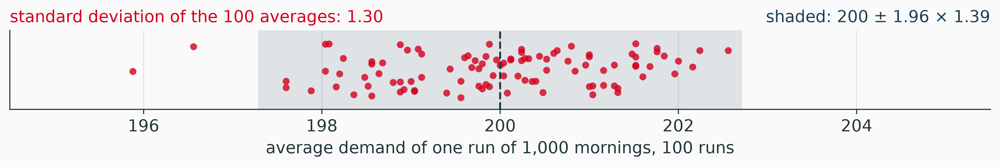
Download Monte_Carlo.xlsx and open the Replications sheet
B7:F7 read one run’s answers; A8:A107 number the runs. Select A7:F107, then Data > What-If Analysis > Data Table, column input cell B4 (empty). Each row recalculates every RAND(): 100 fresh runs.
The 100 averages spread by 1.30; \(43.8/\sqrt{1{,}000}\) predicts 1.39. One run’s standard error is the spread of many runs.
Decisions by Simulation: Expected Profit, Newsvendor
Profit of One Morning
Bake \(Q\) pastries; \(D\) are demanded:
\[ \text{Profit} = 3.00 \min(Q, D) + 0.50 \max(Q - D,\, 0) - 1.20\,Q \]
Bake 220, demand 160: sell 160, 60 left over.
\[ 3.00(160) + 0.50(60) - 1.20(220) = 480 + 30 - 264 = \$246 \]
Bake 220, demand 240: sell 220, none left.
\[ 3.00(220) - 1.20(220) = 660 - 264 = \$396 \]
The Exact Expected Profit
A payoff table, as in deck 06: alternatives down, states across.
| Bake | 120 (0.1) | 160 (0.2) | 200 (0.4) | 240 (0.2) | 280 (0.1) | Expected |
|---|---|---|---|---|---|---|
| 180 | 174 | 274 | 324 | 324 | 324 | 299 |
| 200 | 160 | 260 | 360 | 360 | 360 | 320 |
| 220 | 146 | 246 | 346 | 396 | 396 | 321 |
\[ 0.1(146) + 0.2(246) + 0.4(346) + 0.3(396) = 14.6 + 49.2 + 138.4 + 118.8 = 321 \]
With five states, the table answers exactly. Simulation earns its place when the states are too many to list, as at the chargers.
The Same Decision by Simulation
The same 1,000 mornings, priced for each quantity:
| Bake | Simulated | SE | Exact |
|---|---|---|---|
| 180 | 297.55 | 1.50 | 299 |
| 200 | 317.90 | 2.15 | 320 |
| 220 | 318.45 | 2.52 | 321 |
On each morning, 220’s profit minus 200’s:
- average $0.55
- standard error 0.72
Compare on the same mornings
Both quantities saw the same demand (common random numbers), so the difference’s standard error is a third of either average’s. Still, $0.55 is within one standard error of zero: 1,000 mornings cannot rank 220 above 200.
Mornings Needed to Separate 200 From 220
On any morning, 220 earns $14 less than 200 when demand is 200 or less, and $36 more when it is 240 or more:
\[ \text{mean} = 0.7(-14) + 0.3(36) = \$1.00 \qquad \text{standard deviation} = \$22.9 \]
\[ 2 \times \frac{22.9}{\sqrt{n}} \le 1 \quad\Longrightarrow\quad n \ge (2 \times 22.9)^2 = 2{,}100 \text{ mornings} \]
- 220 came out ahead in 94 of 100 runs of 1,000 mornings (the Replications sheet).
- A dollar a morning is about $365 a year; 2,100 simulated mornings take a second.
The Newsvendor
Not on Exam 2
A missed sale costs \(C_u = 3.00 - 1.20 = 1.80\); a leftover costs \(C_o = 1.20 - 0.50 = 0.70\) (Cachon and Terwiesch 2018). Bake the smallest \(Q\) with
\[ P(D \le Q) \ge \frac{C_u}{C_u + C_o} = \frac{1.80}{2.50} = 0.72 \]
The cumulative column: 0.10, 0.30, 0.70, 0.90. At 200 it falls short, so \(Q^* = 240\), worth $322.
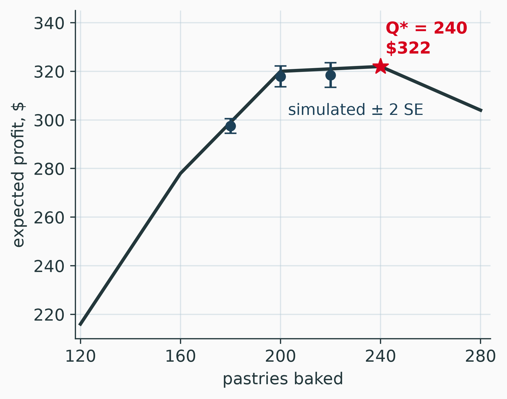
Every quantity from 200 to 240 earns within $2 of the best; 180 gives up $23. The simulation compared three quantities; the fractile searched them all.
Workbook: The Decision Sheet
Download Monte_Carlo.xlsx and open the Decision sheet
Price, cost and salvage are inputs in B4:B6, the bake quantities in C8:E8. The exact payoff table is A10:F14, expected profit row 15; column F is the newsvendor quantity, B20. Rows 24 to 1023 price the 1,000 mornings; I9:L11 give the average, standard deviation and standard error, 220 minus 200 in L.
Try this
- Set the salvage in B6 to 0 (leftovers thrown away). What happens to the fractile in B19 and the quantity in B20?
- Press F9 ten times. How often does L9 favor 220? Compare with the Replications sheet’s I12.
Queue Simulation by Hand: Arrivals, Service and Waits
A Queue in Four Columns
- Arrival = previous arrival + gap
- Start = the later of the arrival and the previous customer’s end: \(\max(\text{arrival}, \text{previous end})\)
- End = start + service time
- Wait = start − arrival
Random Numbers for Gaps and Service
Minutes between arrivals
| Gap | Probability | Random numbers |
|---|---|---|
| 1 | 0.20 | 00–19 |
| 2 | 0.30 | 20–49 |
| 3 | 0.30 | 50–79 |
| 4 | 0.20 | 80–99 |
Mean gap 2.5 minutes: 24 an hour.
Minutes of service
| Service | Probability | Random numbers |
|---|---|---|
| 1 | 0.30 | 00–29 |
| 2 | 0.40 | 30–69 |
| 3 | 0.30 | 70–99 |
Mean 2 minutes: 30 an hour.
The coffee counter’s rates, \(\lambda = 24\) and \(\mu = 30\) an hour, with less variable times than deck 07’s exponentials.
Ten Customers by Hand
| Customer | Random number | Gap | Arrival | Random number | Service | Start | End | Wait |
|---|---|---|---|---|---|---|---|---|
| 1 | 33 | 2 | 2 | 13 | 1 | 2 | 3 | 0 |
| 2 | 21 | 2 | 4 | 70 | 3 | 4 | 7 | 0 |
| 3 | 08 | 1 | 5 | 68 | 2 | 7 | 9 | 2 |
| 4 | 39 | 2 | 7 | 26 | 1 | 9 | 10 | 2 |
| 5 | 47 | 2 | 9 | 82 | 3 | 10 | 13 | 1 |
| 6 | 46 | 2 | 11 | 10 | 1 | 13 | 14 | 2 |
| 7 | 58 | 3 | 14 | 10 | 1 | 14 | 15 | 0 |
| 8 | 82 | 4 | 18 | 50 | 2 | 18 | 20 | 0 |
| 9 | 39 | 2 | 20 | 90 | 3 | 20 | 23 | 0 |
| 10 | 21 | 2 | 22 | 50 | 2 | 23 | 25 | 1 |
What Ten Customers Show
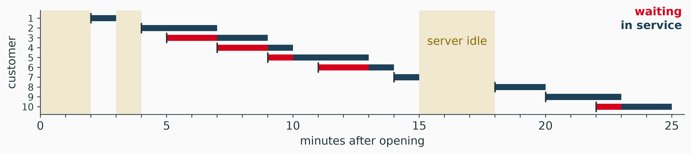
- Five of ten waited, 8 minutes in all: an average wait of 0.8 minutes.
- The barista was busy 19 of 25 minutes: utilization 0.76, near the design’s 0.8.
Ten customers from empty
A short run that starts empty says little about the long run. The validation section shows how long a run must be.
The Same Rule in Python
freeis the previous customer’s end.start,wait,free: the Start, Wait and End columns.- Random times by the inverse transform, as in deck 07: a gap of
-np.log(1 - u) * 2.5minutes. - For \(c\) servers,
freeholds \(c\) times and each customer takes the smallest (the notebook).
Validation: Known Answers and the Warm-Up Period
Validation: Recover a Known Answer
Before a simulation answers a new question, it must reproduce answers already known (Law 2015).
| Queue | Formula | Simulated |
|---|---|---|
| Coffee counter, M/M/1: \(\lambda = 24\), \(\mu = 30\) | 8.00 min | 7.97 ± 0.13 |
| The same, service uniform 1 to 3 min (M/G/1) | 4.33 min | 4.32 ± 0.08 |
| Six chargers, M/M/6: \(\lambda = 10\), 30-min charges | 17.63 min | 18.11 ± 0.60 |
Simulated: 20 runs of 20,000 customers, the first 2,000 of each dropped; ± one standard error. Formulas: deck 07’s M/M/1 set, its appendix (M/G/1), its MMc sheet.
The code passes
All three land within one standard error of the formula. Only now may it answer a question no formula covers.
Warm-Up: Why One Evening Averages Under 8 Minutes
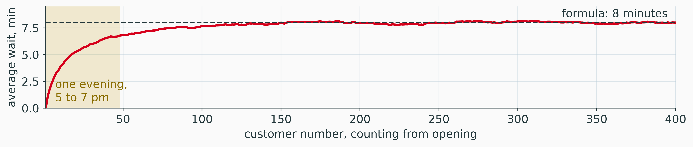
Every run starts empty. Averaged over 10,000 runs, the 25th customer waits 5.7 minutes, the 100th 7.7, and only near the 200th does the wait reach 8. An evening of 48 customers averages about 5.2 minutes.
Warm up, or run long
Drop the first customers of each run, or run long: a short run from empty is biased low.
Multi-Server Simulation: Peaks and Wait Distributions
The Charger Model
- One shared line, first-come, first-served; each driver takes the first charger to free up.
- Arrivals: 6 an hour through the afternoon, 14 at 5 pm, back to 6 by 7 pm.
- Charges: uniform, 20 to 40 minutes: \(20 + 20u\).
- 1,000 evenings, the same evenings for 6, 7 and 8 chargers. Drivers arriving 3 to 7 pm are counted; 1 to 3 pm is the warm-up.
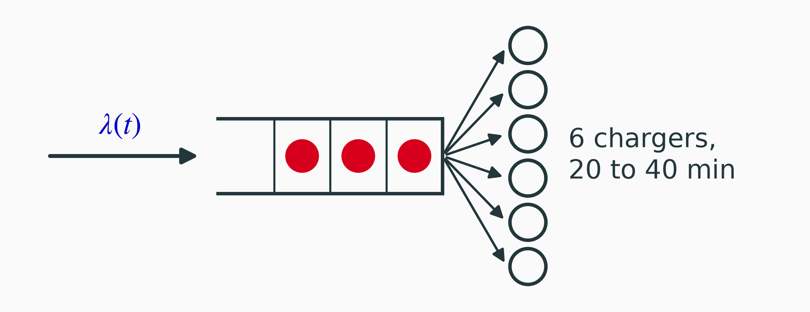
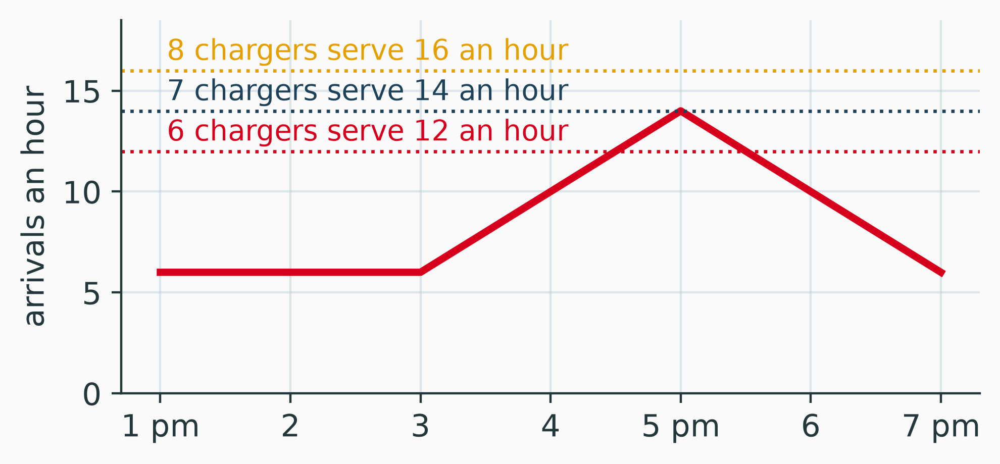
One Change at a Time
Six chargers, from deck 07’s formula to the evening, one assumption per row:
| Model | Average wait | Over 15 minutes |
|---|---|---|
| M/M/6 formula: steady state, 10 an hour, exponential | 17.6 min | |
| One evening, 3 to 7 pm, after a quiet afternoon | 8.1 min | 20% |
| The same, charges uniform from 20 to 40 minutes | 6.1 min | 15% |
| The same, arrivals peaking at 14 an hour at 5 pm | 9.7 min | 26% |
Each change is checkable
An evening is too short to reach the formula’s steady state; less variable charges cut the wait; the peak raises it again. Change one assumption at a time and each step can be explained.
Waits for 6, 7 and 8 Chargers
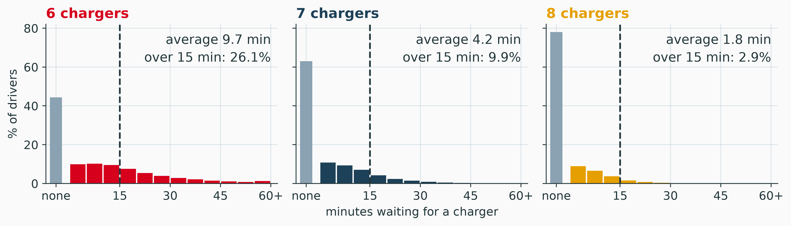
The plaza’s standard: at most 1 driver in 20 waits over 15 minutes
8 chargers meet it (2.9%, standard error 0.3); 7 leave 1 driver in 10 over 15 minutes.
When Drivers Wait
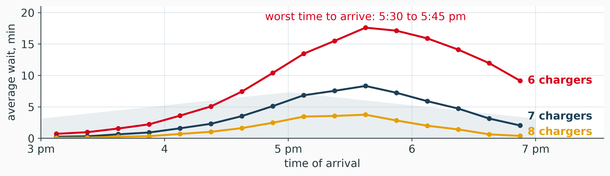
Waits peak half an hour after arrivals (shaded) do: drivers who come after 5 pm find the line the rush built. With 6 chargers, those arriving 5:30 to 5:45 wait 17.6 minutes on average.
Notebook: charger_queue.ipynb
Open charger_queue.ipynb in Google Colab
This section in numpy: the event loop, the hand table as a check, the three validation runs, the 1,000 evenings, the histograms and the waits by arrival time. Run the cells from top to bottom.
Try this
- How many chargers meet the standard “average wait under 5 minutes”?
- Raise the 5 pm peak from 14 to 16 an hour. How many chargers does the 1-in-20 standard need now?
- Make the charges exponential again. Which moves more, the average or the share over 15 minutes?
Simulation and AI: Testing Policies, Checking Code
A Simulation Tests a Policy
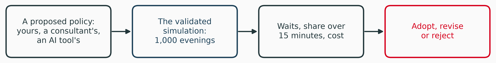
- A chatbot suggests reserving a charger for drivers who book ahead. Before any driver sees it, the plaza runs it through 1,000 simulated evenings.
- Reinforcement learning trains an artificial intelligence (AI) policy by trial and error in simulated episodes: the policy is as good as that simulation.
Validate first
A policy tuned on a wrong simulation is tuned to the wrong plaza, whoever proposes it.
Ask, Then Verify: The Prompt
Paste this into ChatGPT or Gemini, word for word:
Prompt
Write a Python program, using only numpy, that simulates the coffee counter at a highway service plaza. Customers arrive at random at an average rate of 24 per hour (Poisson arrivals). One barista serves them one at a time, in order of arrival, and each service time is exponential with a mean of 2 minutes. Report the average time a customer waits in line before service starts, in minutes.
Deck 07’s formula: \(W_q = 8\) minutes. Run the model’s code, then check it against the validation slide.
Ask, Then Verify: The Reply
TODO: reply from ChatGPT or Gemini, with the tool, the model’s name and the date
TODO for Sebastián: paste the model’s reply here.
Verify it, by reading the code and running it
- Does service start at \(\max(\text{arrival}, \text{previous end})\)? A start at the arrival time lets service begin before the previous customer finishes.
- How many replications, and what standard error? One run’s average is one estimate.
- Is a warm-up dropped, or is the run long? A short run from empty gives about 5 minutes.
- Are 24 an hour and 2 minutes in one unit? Does the answer land within two standard errors of 8?
Practice: Simulating a Queue by Hand
Practice Problem
The truck charging bay
Electric delivery trucks use the plaza’s one charging bay, first come, first served. The bay is empty when the first gap begins.
| Minutes between arrivals | 5 | 10 | 15 | 20 | 25 |
|---|---|---|---|---|---|
| Probability | 0.10 | 0.20 | 0.40 | 0.20 | 0.10 |
| Minutes of service | 6 | 12 | 18 |
|---|---|---|---|
| Probability | 0.25 | 0.50 | 0.25 |
- Build the random-number ranges for both tables.
- Simulate ten trucks (arrival, start, end, wait) with the random numbers for gaps 65, 97, 26, 72, 42, 50, 89, 52, 62, 05 and for service 50, 82, 53, 48, 98, 79, 75, 04, 71, 74.
- Find the average wait, the share of trucks that wait, and the bay’s utilization.
- With exponential times at the same means, M/M/1 gives \(W_q = 48\) minutes (deck 07). Give two reasons your answer is far below it.
Summary
Summary
Core takeaways
- The outcome at average inputs is not the average outcome
- Report every simulated average with its standard error; four times the runs halve it
- Compare alternatives on the same random numbers
- A queue simulation is one rule: start = max(arrival, previous end)
- Validate against known answers first
Watch out for
- A run that starts empty is biased low
- A difference within two standard errors is not settled
- An average wait hides the peak
Bottom line
Bake from 200 to 240 pastries: the expected profits differ by $2. Install 8 chargers to keep 19 drivers in 20 under 15 minutes at the 5 pm peak.
References
Monte Carlo, replications and validation follow Law (2015) and Winston (2004); spreadsheet simulation and the Data Table, Powell and Baker (2014); the flaw of averages, Savage (2009); the newsvendor, Cachon and Terwiesch (2018); the M/G/1 formula, Gross et al. (2008).
Cachon, Gérard, and Christian Terwiesch. 2018. Matching Supply with Demand. 4th ed. McGraw-Hill Education.
Gross, Donald, John F. Shortle, James M. Thompson, and Carl M. Harris. 2008. Fundamentals of Queueing Theory. 4th ed. Wiley. https://doi.org/10.1002/9781118625651.
Law, Averill M. 2015. Simulation Modeling and Analysis. 5th ed. McGraw-Hill Education.
Powell, Stephen G., and Kenneth R. Baker. 2014. Management Science: The Art of Modeling with Spreadsheets. 4th ed. Wiley.
Savage, Sam L. 2009. The Flaw of Averages: Why We Underestimate Risk in the Face of Uncertainty. Wiley.
Winston, Wayne L. 2004. Operations Research: Applications and Algorithms. 4th ed. Duxbury Press.
Questions?
Simulation